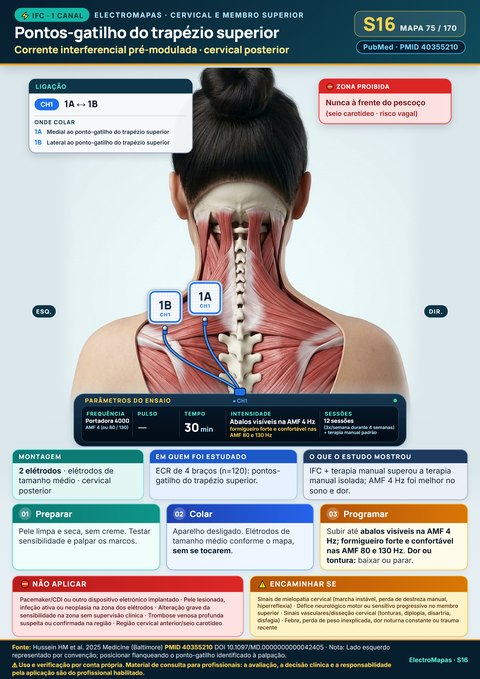

Coleção Completa
Reúne os 170 mapas num só Atlas.
Acrescenta os 70 mapas da expansão ao teu acesso e recebe o Atlas completo de 601 páginas, com 170 mapas e 170 fichas práticas.
Uma amostra da expansão
Miniaturas reais de mapas incluídos no conjunto adicional.




O que recebes
- Atlas completo de 601 páginas, com 170 mapas e respetivas fichas.
- Conjunto separado dos 70 mapas da expansão, em formato imprimível.
- Acesso ao módulo Coleção Completa no Clube FisioVanta após a compra.
Os 20 mapas de presente da compra principal permanecem disponíveis no respetivo módulo.
Compra adicional
Os 70 da expansão + o Atlas completo
19,90 €Oferta independente do Atlas V9 que já compraste. Consulta sempre as fichas e os avisos antes de qualquer aplicação.